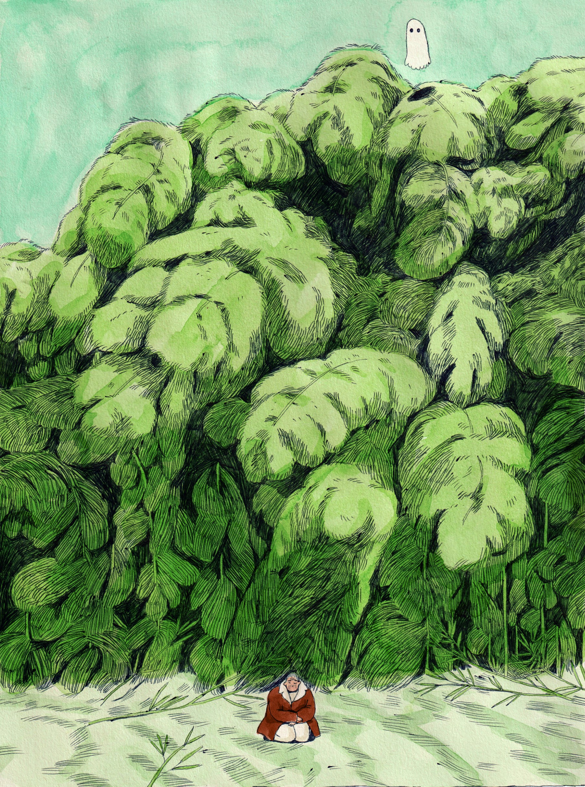
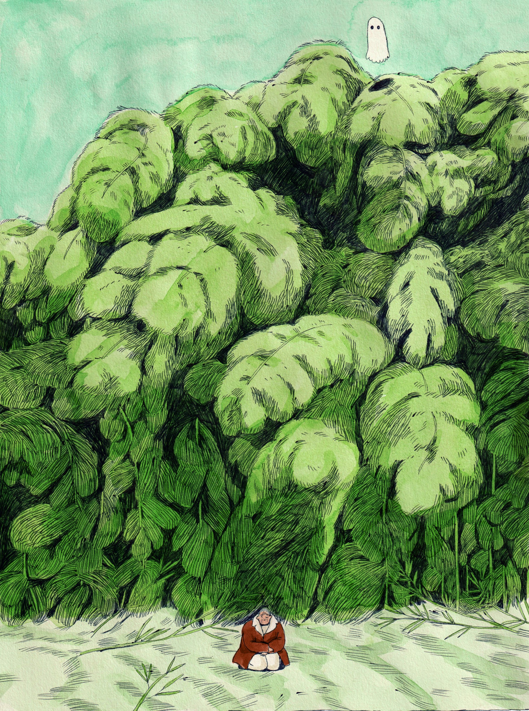

Karlotta Freier is an accomplished Brooklyn-based artist
with a background in illustration. In 2021, she graduated
from the MFA Illustration as Visual Essay program at the
School of Visual Arts. In addition to her creative pursuits,
Karlotta also dedicates her time to sharing her knowledge
with the next generation of artists.
She has taught illustration at the China Academy of Art
and spoken as a guest speaker at universities across the
United States. Freier's work has also been exhibited in a
variety of solo and group exhibitions, as well as festivals
worldwide. Her achievements have been recognized by
the Art Directors Club, which awarded her a Cube in 2018
and a Pencil for Best Illustration Portfolio in 2021.
 
